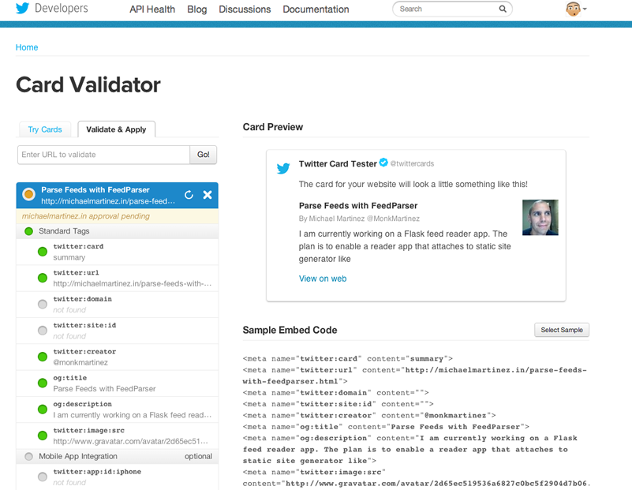
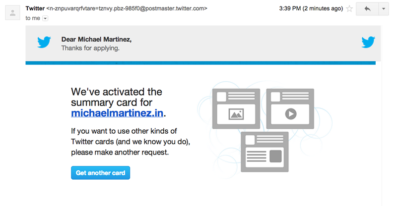
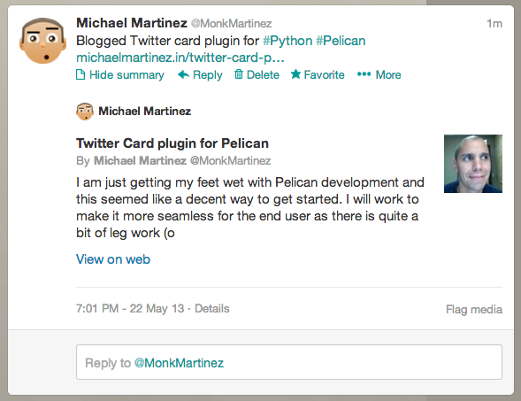

I am just getting my feet wet with Pelican development and this seemed like a decent way to get started. I will work to make it more seamless for the end user as there is quite a bit of leg work (on the user end) that goes into it now.
This plugin adds the ability to generate a Twitter card automagically upon every make html command.
It takes a little bit of effort to set-up due to the fact that templates and themes can
vary wildly from implementation to implementation.
The minimal requirements for a functioning Twitter card are:
- Type of card - summary by default
- URL of the content
- Title of the content
- Description of the content
See: TODO.md for a list of items I will be working on to improve this plugin
Step 1
- Go to https://dev.twitter.com/cards to see what this is all about.
Step 2
- Integrate this plugin - The meat and potatoes of it all...
In pelicanconf.py add:
#============= # Twitter Card #============= # https://dev.twitter.com/cards TWITTER_CARD_USE = (True) # (False) TWITTER_CARD_SITE = '' # The site's Twitter handle like @my_blog TWITTER_CARD_SITE_ID = '' # The site's Twitter ID TWITTER_CARD_CREATOR = '@m<yourhandle>' # Your twitter handle like @monkmartinez TWITTER_CARD_CREATOR_ID = '' # The site creator's id GRAVARTAR_URL = ''
If you use Jinja's includes pattern Ie. _includes\pathtohtml.html use the following tag in your templates header area.
{% if article %}
{% if TWITTER_CARD_USE %}
{% include '_includes/twitter_card.html' %}
{% endif %}
{% endif %}
Then create and paste this code into twitter_card.html
{% if TWITTER_CARD_USE %}
<meta name="twitter:card" content="summary">
<meta name="og:url" content="{{ SITEURL }}/{{ article.url }}">
{% if TWITTER_CARD_SITE_ID %}
<meta name="twitter:site:id" content="{{ TWITTER_CARD_SITE_ID }}">
{% elif TWITTER_CARD_SITE: %}
<meta name="twitter:site" content="{{ TWITTER_CARD_SITE }}">
{% endif %}
{% if TWITTER_CARD_CREATOR_ID %}
<meta name="twitter:creator:id" content="{{ TWITTER_CARD_CREATOR_ID }}">
{% elif TWITTER_CARD_CREATOR: %}
<meta name="twitter:creator" content="{{ TWITTER_CARD_CREATOR }}">
{% endif %}
<meta name="og:title" content="{{ article.title[:70]|e }}">
<meta name="og:description" content="{{ article.summary[:200]|striptags }}">
{% if GRAVATAR_URL %}
<meta name="twitter:image:src" content="{{ GRAVATAR_URL }}">
{% endif %}
{% endif %}
To use this plugin with macros, use the following macro tag in the head portion of your template. The tag below assumes you have an article_macros file where you store/define macros.
{% if article %} {{ article_macros.twitter_card }} {% endif %}
Then add the following macro to your article macros or wherever it makes sense:
{% macro twitter_card %}
{% if TWITTER_CARD_USE %}
<meta name="twitter:card" content="summary">
<meta name="og:url" content="{{ SITEURL }}/{{ article.url }}">
{% if TWITTER_CARD_SITE_ID %}
<meta name="twitter:site:id" content="{{ TWITTER_CARD_SITE_ID }}">
{% elif TWITTER_CARD_SITE: %}
<meta name="twitter:site" content="{{ TWITTER_CARD_SITE }}">
{% endif %}
{% if TWITTER_CARD_CREATOR_ID %}
<meta name="twitter:creator:id" content="{{ TWITTER_CARD_CREATOR_ID }}">
{% elif TWITTER_CARD_CREATOR: %}
<meta name="twitter:creator" content="{{ TWITTER_CARD_CREATOR }}">
{% endif %}
<meta name="og:title" content="{{ article.title[:70]|e }}">
<meta name="og:description" content="{{ article.summary[:200]|striptags }}">
{% if GRAVATAR_URL %}
<meta name="twitter:image:src" content="{{ GRAVATAR_URL }}">
{% endif %}
{% endif %}
{% endmacro %}
Step 3
- Run
make htmlto generate the site. - Inspect the output and to be sure twitter meta data was generated successfully
- Push the site to your host
Step 4
- Visit https://dev.twitter.com/docs/cards/validation/validator to validate. You will need to supply form with a page that has the correct meta data.

- On the validation page click the apply for validation button then ...
time.sleep(email_arrival)

- Now try it out!
